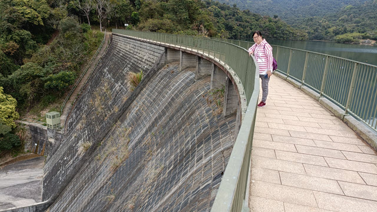

在2022年2月15日，我和 Alex 進行了一個輕鬆的遠足行程，路線是從大欖轉車站步行到河背水塘。
我們早上在荃灣南豐巴士總站搭乘 68M 巴士，約20分鐘便到達大欖轉車站。
在大欖轉車站的便利店買了一些乾糧，便正式開始行程。
循車站旁的階級往下走，沿馬路拐到青朗公路對面往荃灣方向的大欖轉車站。
車站對面馬路旁的樹林中有一條小徑，看來是通往山坡下的馬鞍崗村。但小徑入口有「行人禁止進入」的指示牌，所以十分猶豫。大欖隧道警衛看見我們在公路附近徘徊，便立即走來告訴我們, 那條小徑是可以行人的。
進入小徑, 走下一段石級，跨過一條小溪，走下一條斜坡，來到一條馬路，就這樣進入了八鄉馬鞍崗村。
在這裡右轉沿馬路走，拐過一個很大的墓園，繼續往前走。
經過八鄉馬鞍崗村公所，再往前走一會，路旁有一間房子，牆身張貼了大大個的「河背悠遊聚腳點士」海報。
記得在 Google Map 見過這間餐廳。Ah… 原來就在這裡，便打算在這裡吃完午餐才開始登山。
走進屋子內, 給居住在這裡的村民喝著, 這時才知道攪錯了，原來「河背悠遊聚腳點士多」並不是餐廳, 是一間民居！
繼續往前走一會，離開八鄉馬鞍崗村，來到八鄉河背村。
如果從元朗泰衡街乘71號綠色專線小巴來，這裡便是八鄉河背村終點站。
八鄉河背村公所旁有幾間建於 50 – 60年代的古老大宅，還保存得很好。其中一間更開闢為河背士多，原來這間才是餐廳！
河背士多午餐的選擇不多，今天只供應三道碟頭飯，分別是梅菜肉餅、煎豬排雞蛋和節瓜排骨，取價44元，要飲品則另加 3 – 5元。
我們各自叫了一個碟頭飯，加配飲品。碟頭飯份量很大，味道很好，就好像在家吃飯一樣。
吃完午飯，繼續行程。
八鄉河背村可以說是河背水塘的登山口。我們會從這裡沿步道一直往上走到位於海拔165米高的河背水塘。
離開河背士多，轉右沿馬路走，經過已荒廢的育英學校。在前面的路口轉右往上走，經過同樣已荒廢的馬鞍崗幼稚園。
再往上走一會，當看見馬路左邊的「河背優遊聚腳點」時，才知道剛才攪錯了地方。這裡的地方很大，環境比河背士多好很多，供應的食品和飲料也豐富很多。不過, 河背士多的午餐更合我們的胃口。
繼續往上走，來到一個 T 字路口，在這裡轉左往上走，就離開了八鄉河背村，進入山區了。
從這裡開始，接著沿石屎馬路一直往上走到盡頭便是河背水塘。
馬路鋪設得很好，不太斜，十分好走。
往上走一會，景色漸漸開揚，沿途可俯瞰八鄉馬鞍崗村、八鄉河背村及元朗平原，景色優美，不時駐足拍照和欣賞。
從河背村登山口開始計，向上步行了約40分鐘來，來到一個分叉路口，路旁寬闊的大草坪是河背營地，前面的路是往清潭水塘及雷公田，右轉上山的路是往河背水塘。
河背坑 流經河背營地附近，那裡有一條瀑布和一個潭，我們當然順道往那裡遊覽, 風景不俗。
欣賞完風景後，沿馬路繼續往上走, 不一會便來到青年有機農莊。可惜今天沒有營業，只能在外面看看。更可惜的是，農莊農地上種植的蔬菜沒有收割, 很多都開始枯黃，十分浪費。現在市場上蔬菜短缺, 而且漲價數以倍計, 但這裡竟然有菜沒有人收割, 太可惜了!
再沿石屎馬路一直向上走，來到馬路的盡頭，這裡便是河背水塘的入口。
河背水塘位於元朗八鄉、海拔165米高的山谷中，容量為50萬立方米，屬大欖郊野公園。
進入河背水塘，最吸引遊客是Left邊的水壩，我們也不例外，第一時間往那裡遊覽。
河背水塘水壩長約157米，高約17米，最大特色是呈 S 型的構造。河背水塘屬於灌溉水塘，主要用作灌溉新界西北的農田。
水塘湖光山色，水平如鏡，樹木倒影在水中，構成一幅很優美的圖畫。
走過水壩，右邊是河背水塘家樂徑的入口。
接著的行程是沿河背水塘家樂徑環繞水塘一周。
河背水塘家樂徑平緩易走，真是老幼適宜。唯一不足是，大部份步道旁的樹木過於茂密，阻擋了水塘的風景。
沿頗為沉悶的一段河背水塘家樂徑走了約20分鐘，迎面是一段竹林隧道，相信是整條步道最吸引的地方，所有旅客都停下來拍照。
穿過竹林隧道，繼續沿河背水塘家樂徑繼續向前走。路旁的樹木漸漸沒有起初的那麼茂密，水塘的優美景色不時從樹林間閃出，目不暇給。
河背水塘家樂徑全長約2公里，我們慢慢的走，約一小時便返回河背水塘的入口。
就這樣輕輕鬆鬆的把河背水塘繞了一圈。
接著掉頭循原路離開，當走過河背營後，不時有越野單車以高速從身旁擦過，尤其是十多架連隊一起向下衝時, 更為危險, 唯有儘量靠近路邊一直往下走。
很快便返回山下的河背村，經過環境優美的「河背優遊聚腳點」，便在這裡吃一個下午茶，順便休息一會。
我們叫了一樽冰凍的洛神花茶, 一碟乾炒牛河，味道不錯。
吃完下午茶，沿馬路繼續往下走，離開河背村，穿過馬鞍崗村，便來到往荃灣方向的大欖轉車站。
接著乘巴士返回荃灣，就這樣結束了今天的河背水塘遠足行程啦!